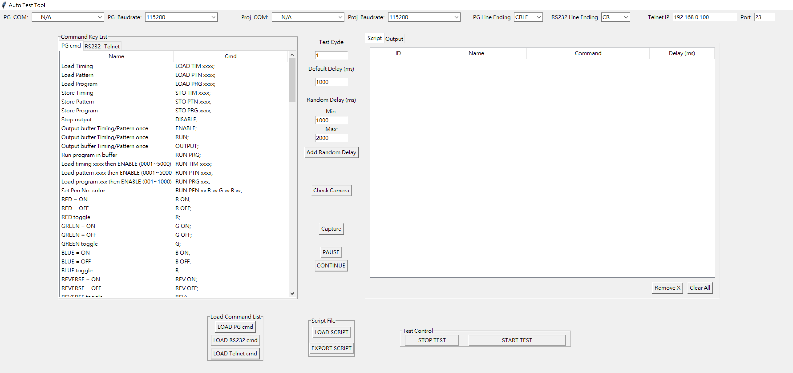
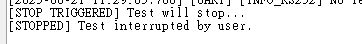

｜
｜｜｜
這個 Auto Test Tool 是 for 控制 Pattern Gen 以及投影機，使用python編譯環境，由韌體研發處一部實習生 Jessica.Yen 所寫。
Auto Test Tool/
├── Auto Test Tool.exe #自動化測試執行檔
├── assets/
│ ├── command_list.yaml #defult Pattern Gen指令集
│ ├── dataTIM_PTN_link.yaml #PG_tim&ptn對照
│ ├── RS232_command_list.yaml #defult RS232指令集
│ └── telnet_command_list.yaml #defult Telnet指令集
├── scripts/
│ └── example_sequence.yaml #存測試腳本
├── logs/
│ └── log_output.txt #存測試log output
└── captures/
└── capture_example.png #截圖
👁🗨UR主介面

左邊 cmd；右邊 Script；中間以及下面有一些功能按鍵
✅支援裝置
✅主要功能
實際操作前請先閱讀注意事項
在開啟執行檔前，請確保在與執行檔同level中，有創建專案結構中的資料夾與資料集(如下)
assets/
├── command_list.yaml (defult)
├── dataTIM_PTN_link.yaml (for PG)
├── RS232_command_list.yaml (defult)
└── telnet_command_list.yaml (defult)
scripts/ logs/ captures/
Auto Test Tool.exe
若要使用 Telnet 功能，請輸入 IP 以及 Port
yaml 格式中，中括號[ ]；大括號 { }，皆為特殊字元，指令使用雙引號包起來即可
"[INFO?]"
"{INFO?}"
#========= Pattern Gen ============
- cmd: LOAD PRG xxxx;
name: Load Program
- cmd: STO TIM xxxx;
name: Store Timing
#============ RS232 ===============
- cmd: (LOC+LANG0)
name: Language/English
- cmd: (LOC+LANG1)
name: Language/French
- cmd: LOAD TIM 601;
name: CTA-640X480P-59 4:3
- cmd: LOAD TIM 602;
name: CTA-640X480P-60 4:3
- id: 1
name: CTA-1920X1080P-60 16:9
cmd: 'PG: LOAD TIM 632;'
delay: 1000
- id: 2
name: Test Pattern/Grid
cmd: 'RS232: (ITP 1)'
delay: 1000
- id: 3
name: Capture Image
cmd: 'CAME: CAPTURE'
delay: 1000
- id: 4
name: Random Delay 1000-2000ms
cmd: RANDOM_DELAY:1000-2000
delay: random
請遵守以下操作方式，以免程式開啟多個執行序，Error~~
腳本中每行指令，若有更改指令參數要按下 ENTER 儲存後再做其他動作
開始測試腳本後 (尚未測試完成)，若中途要修改腳本指令，請先按下 STOP TEST ，再做修改，
再次按下 START TEST 即可執行新的腳本
開始測試腳本時 (尚未測試完成)，若單純是要重新再執行一次腳本指令，請先按下 STOP TEST ，
再按下 START TEST ，即可重新執行測試腳本，實現 RETRY

使用Telnet功能，輸入IP . 字符時，記得切換成英文輸入法才能使用小數字鍵的 . 字符
所有指令來源都需以 PG: / RS232: / Telnet: / CAME: / Random Delay: 為前綴，以利系統識別發送Source
若 RS232 是要以16進制傳送，Source請改成 RS232HEX:，系統才可以讀byte
Telnet 若要使用16進制傳送，Source請改成 TelnetHEX:，系統才可以讀byte
十六進制輸入格式為
RS232HEX: 00 01 05
Delay 值需 ≥ 500ms，否則會跳出警告
外接 USB 攝影機需插入後再執行程式，預設使用 index=0
若 COM port 未選擇，系統會忽略該來源，並在Log [WARN]
腳本匯出儲存於scripts/ 資料夾中
截圖自動儲存於 captures/ 資料夾中
為確保 相機初始化時間不會過長，在相機初始化時使用了以下設定（故僅適用於 Windows 平台）：
cap = cv2.VideoCapture(0, cv2.CAP_DSHOW)
class PatternGenGUI
class UARTController
class TelnetController